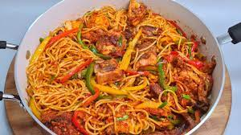

Stir Fry Spaghetti

Stir fry spaghetti is a delicious meal prepared by parboiling and frying pasta
with stir-fried veggies and pepper. It can be eaten as a breakfast, lunch
or dinner. Stir fry spaghetti is a good source of carbohydrate and vitamins as it contains pasta and veggies
and proteins as well, depending on your choice. It is very easy to cook.
Now that that's out of the way, let's get cooking!
Ingredients
- 2 red bell pepper
- 1 green bell pepper
- 1 onion
- 1 big carrot
- 1/2 spoonful of thyme
- 1 spoonful of chopped garlic
- 1-2 season cubes
- 1/2 pack of spaghetti/pasta
- 1 teaspoonful of curry powder
- 3-4 tablespoonful of vegetable oil
Steps!
- Dice/chop the carrot, onion, red bell pepper, green bell pepper,
ginger and garlic. Cut or dice them on a flat surface such that
each of them is separate (do not mix them).
- Put the spaghetti in a pot and boil. Add a spoonful of oil to
it and cook it for 10-15 minutes or cook until it is about
70-80% done (do not let it soften too much). Bring it down
from the fire or cooker and drain it.
- Put 3 spoonfuls of oil in your frying pan and add the diced onions
and carrot. cook this for about 2 to 3 minutes under medium heat.
Then add the diced green and red bell pepper. Allow it to cook for
another 3 to 4 minutes after which you will add the diced ginger and
garlic, salt, seasoning cubes, curry powder amd thyme (add the seasoning
cubes and salt accordint to taste).
If you want to add stir-fried chicken. you should stir fry the chicken
first, separately. Bring the stir-fried veggies down and put another
frying pan on the cooker, put 3 to 4 spoonfuls of oil and add the
chicken to be fried. Drain the chicken before it for about 3 to 4
minutes. Then add it to the stir-fried veggies and put it back on the
cooker before proceeding to the next step.
- Add the parboiled pasta to the stir-fried veggies and cook for about
5 minutes and stir once in a while as you cook. Your stir fry
spaghetti is ready!
Return to main page